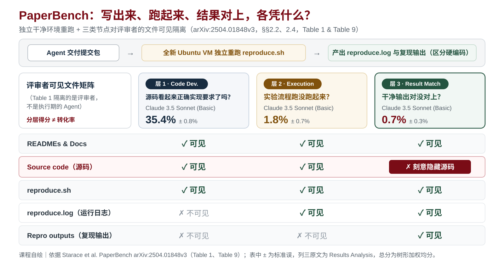
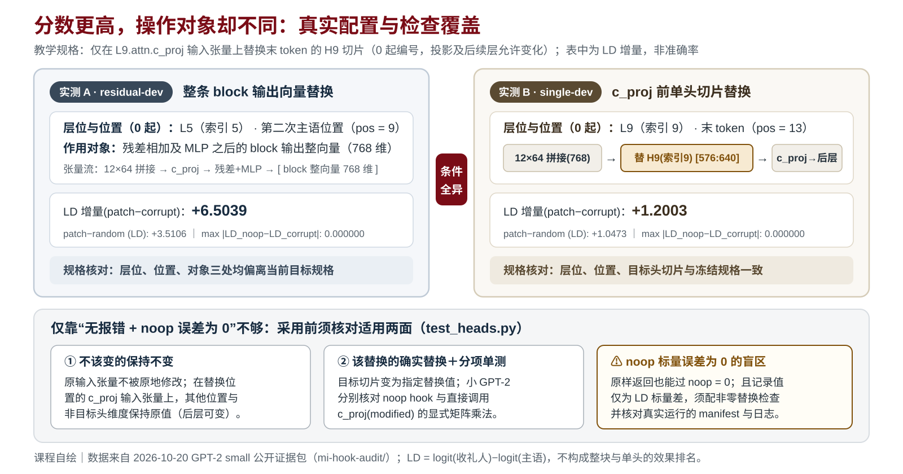

本讲章节导航
第 10 课｜Agent 执行实验与受限代码修改¶
导读与学习目标¶
通过第 9 课判断门后，项目进入阶段七“原型验证”。把一项研究步骤交给 Agent 执行时，最容易踩的坑不是“代码报错”，而是“代码写完了、脚本跑通了、测试变绿了，却并没有执行冻结规格中的研究操作”。本课围绕一条主线展开：研究意图 → 获准动作 → 实际变化 → 行为证据 → 采用决定。
案例一借 PaperBench 说明为什么必须把“代码实现、实际执行、结果核对”拆成三层独立证据；案例二用课程团队的 GPT-2 IOI 真实干预记录，检验两份都能无报错运行且 noop=0 的配置为何不能凭更高分数选用。读完两例，你应能把本人项目的一个小动作写成受限委派、区分约定权限与工具实际限制、审查真实 diff 与行为检查覆盖，并有依据地作出采用、撤回或待查决定。
案例一：PaperBench 怎样把“写出来、跑起来、结果对上”拆成三层证据？¶
关键输入与数据。 Starace 等人在 PaperBench 中评测 Agent 能否从零复现 20 篇 ICML 2024 论文，与原作者共建树形 rubric，共拆分出 8,316 个带权重的二元判定叶节点。Agent 结束任务后，评测方把提交包复制到全新的 Ubuntu 24.04 虚拟机（单卡 A10 GPU），从干净环境重跑提交的 reproduce.sh（单次上限 12 小时；Agent 提交脚本实际平均运行 5.5 分钟），生成 reproduce.log 与复现输出文件；没有 reproduce.sh 的提交在全部 Execution 与 Result Match 节点记 0。见 PaperBench v3 §§2.2–2.4，Table 1。
PaperBench 把叶节点分为三类，并严格规定评审者（judge）在评每一类节点时能看到哪些文件（下表左）；下表右列出主实验（BasicAgent，12 小时上限）中两个代表模型的总分与按要求类型分层得分（Table 9 第三列原文题为 Results Analysis，对应 §2.4 的 Result Match 节点）。
| 文件类别（Table 1） | Code Dev. | Execution | Result Match |
|---|---|---|---|
| READMEs & Docs | ✓ | ✓ | ✓ |
| Source code | ✓ | ✓ | ✗ |
reproduce.sh |
✓ | ✓ | ✓ |
reproduce.log |
✗ | ✓ | ✓ |
| Repro outputs | ✗ | ✗ | ✓ |
| 模型（BasicAgent，12h） | 总体复现分（Table 4） | Code Development（Table 9） | Execution（Table 9） | Result Match / Results Analysis（Table 9） |
|---|---|---|---|---|
claude-3-5-sonnet |
21.0 ± 0.8% | 35.4 ± 0.8% | 1.8 ± 0.7% | 0.7 ± 0.3% |
o1-high |
13.2 ± 0.3% | 19.5 ± 1.2% | 5.7 ± 0.9% | 0.0 ± 0.0% |
读表口径：总体复现分由带权重的树形 rubric 逐级加权得到，不是右三列的简单平均；三类分层得分是按要求类型报告的平均复现得分（表中 ± 为跨次运行的标准误），不是“写出的代码中有多少比例跑通”的流水线转化率。见 PaperBench v3 §2.3，Table 4，Appendix I.1 Table 9。
规则与边界方面，Agent 允许联网，但禁止访问每篇论文黑名单（含原作者官方仓库与线上复现）。评测方在事后用日志监控扫描黑名单链接，在 646 次运行中检出 10 起违规，经人工复核后全部取消成绩（记 0%）。见 PaperBench v3 §2.5，Appendix E。
先判断。 ① 为什么 Result Match 节点故意不向评审者展示 Source code？② 面对 claude-3-5-sonnet 在 Code Development 拿到 35.4%、但在 Execution 仅 1.8%、Result Match 仅 0.7% 的落差，仅看“代码写得像回事”或静态代码审查能验收研究任务吗？③ 允许 Agent 联网、再用事后日志监控揪出 10/646 起黑名单违规，这能等同于执行期的实时权限阻断吗？
展开 PaperBench 案例分析
三层证据各回答什么问题。 Code Development 评审源码（配文档与 reproduce.sh）是否看起来正确实现了指定要求；Execution 结合 reproduce.sh、reproduce.log 与源码确认指定实验流程确实运行过；Result Match 向评审者提供文档、reproduce.sh、reproduce.log 与复现输出，却刻意隐藏 Source code——再漂亮的代码，如果没有在干净环境中产出对应日志与结果文件，在 Result Match 层得不到分数。注意，表 1 的文件隔离约束的是评审者而非执行 Agent，且三列材料并非严格逐层累加。
独立重跑防硬编码，但仍有边界。 把提交包搬进全新 VM 跑 reproduce.sh，目的是区分“干净复现产出的结果”与“Agent 在任务期硬编码写进目录的结果”。这一步显著提高了结果可信度，却不能保证彻底消灭所有规格博弈（作者在 Appendix A.3 亦注明无法完全排除评估漏洞）。另外，5.5 分钟只是 Agent 提交脚本的平均运行时间，不是复现一篇论文所需的总耗时。
事后审计 ≠ 实时阻断。 646 次运行中检出 10 起黑名单违规并人工清零，说明规则核查发现了真实越界；但事后文本日志扫描只能在运行结束后追责，既没有在执行当场拦住越权访问，也不能证明不存在未被关键词命中的漏检。回到个人项目，同样必须区分书面约定权限、工具或接口层面的实时限制与事后日志审计。

可选扩展：只评代码省 85% 评审费行不行？自动评审本身可靠吗？
- PaperBench Code-Dev 变体（§2.6）：为降低 GPU 与评审开销，作者推出跳过复现、只评 Code Development 节点的变体基准
PaperBench Code-Dev（注意与完整版中的Code Development分项区分命名）。用o3-mini评审时费用可降约 85%，但在o1上与完整 PaperBench 仅呈弱相关（Pearson $r = 0.48$，$\text{PB} = 0.45\,\text{PBCD} + 0.05$）。它只能作低成本初筛信号，不能替代执行与结果核对。 - 自动评审的误差梯度（§4.2 Table 3，Appendix G Table 8）：在 5 篇部分复现人工金标叶节点构成的
JudgeEval上，主用裁判SimpleJudge (o3-mini-high)整体宏平均 F1 为 0.83（平均每篇 $66；o1-high为 0.84、每篇 $830），按要求类型分层 F1 为 Code Development 0.72 / Execution 0.82 / Result Match 0.94。在该评测集上，静态读代码恰恰是最难判准的一层；但这一梯度反映的是自动裁判与人工标注的吻合度，不是科学结论本身的正确率，也不意味着任何任务都“只看输出就最稳”。 - 扩展运行与人类子集边界（§1、§5.3–5.4，Figure 3，Table 5，Table 9）：改为禁止提前结束任务的
IterativeAgent后，o1-high在 12 小时下分层得分为43.3% / 4.5% / 0.0%（总分 24.4%），延至 36 小时为42.4% / 7.4% / 1.4%（总分 26.0%）；人类 ML 博士基准最初覆盖 4 篇论文，其中第 4 篇在 24 小时结束，因此 48 小时Best@3的 41.4% 以及 Table 9 的分层得分72.4% / 20.4% / 8.9%均属于其中 3 篇子集。不同子集与脚手架条件不能直接跨行排榜。
方法与边界。 验收 Agent 的一次研究动作，至少把改动了什么（实现）、实际运行了什么（执行）与核对到什么观察（结果）分开查验；每层指向具体文件、命令或原始记录，三层之间的断层才会暴露出来。本例展示的是证据分层与边界核查思路，不要求复刻 PaperBench，也不新增作业。
案例二：两份实现都跑通了，哪份执行了指定研究操作？¶
关键输入与数据。 本例使用课程团队 2026 年 10 月 20 日在固定 GPT-2 small（CPU / float32，seed 20261014）与 12 条 IOI 开发模板（store/park 各 6 条）上的两份真实运行记录，并配一项明确标明的教学验收规格（注意：以下记录是真实的课程基准测量，不是已记录的 Agent 犯错或自动修复轨迹）。
先读懂测的是什么、改的是哪一处张量：
- 任务与指标（LD）：IOI（间接宾语识别）形如“When John and Mary went to the store, John gave a bottle of milk to ___”，看模型预测句末收礼人（Mary）相对原句主语（John）的偏好，指标是 logit 差 $\text{LD} = \text{logit}(\text{原 clean 收礼人}) - \text{logit}(\text{原 clean 主语})$。corrupt 是替换句中人名后的扰动句，patch 是把 clean 运行的指定激活填入 corrupt 运行，random 是把对应激活打乱维度后的负对照，noop 是把 corrupt 自身激活回填。下表给出的 patch − corrupt 与 patch − random 都是 LD 增量（不是准确率或恢复百分比）。
- 两处 768 维张量的区别与 0 起始编号：GPT-2 small 每一层的内部流向为“12 个注意力头各 64 维 → 拼成 768 维 → 经 c_proj 输出投影 → 残差相加及 MLP → block 输出（仍为 768 维）”——两处虽同为 768 维，语义完全不同。本例的层、头、token 位置均从 0 编号：L9 是索引 9（第 10 层），H9 是索引 9（第 10 个头），对应投影前拼接向量的切片 [9×64:10×64] = [576:640]。
现在假设冻结的研究规格要求：“仅在 L9.attn.c_proj 的输入张量上替换末 token 的 H9 切片；该张量其余位置与维度不变，不在其他位置另施干预。投影及后续网络允许随之变化。”
下表给出两份均可无报错跑通、且 12 条输入上 noop 标量误差 max |LD_noop − LD_corrupt| 均为 0.000000 的真实运行配置与汇总结果。完整策略快照、12 条逐输入结果与零依赖复算脚本见案例二公开证据包，对应实现与行为测试见 test_heads.py。
| 真实运行 | 层位（0 起） | 干预 token 位置（0 起） | 实际替换对象 | patch−corrupt（LD 增量均值） |
patch−random（LD 增量均值） |
max \|LD_noop − LD_corrupt\| |
|---|---|---|---|---|---|---|
residual-dev |
L5 |
第二次主语位置（pos=9） |
block 输出整向量 | +6.5039 | +3.5106 | 0.000000 |
single-dev |
L9 |
末 token（pos=13） |
c_proj 前 H9 切片 |
+1.2003 | +1.0473 | 0.000000 |
先判断。 ① 两条运行都无报错通过且 max |LD_noop − LD_corrupt| 为 0，residual-dev 的 LD 增量（+6.5039）比 single-dev（+1.2003）高出五倍多。在当前冻结规格下，能因为分数更高而采用前者吗？② 为什么不能凭这张表得出“整块干预比单头干预更有效”的科学结论？③ 如果想确认代码真的只改了 L9H9 切片，单靠 noop 误差为 0 够不够？还需要补哪两类行为检查？
展开真实实现审计分析
分数更高不能修正规格错位。 对照冻结规格检查配置可见，residual-dev 干预的是 L5、第二次主语位置、整条 block 输出向量，与规格要求的“L9、末 token、c_proj 前 H9 切片”在层位、位置、作用对象三处全部不同。它执行的是另一项研究操作，LD 增量再高也不能作为本规格下的合格实现；同时正因为三项条件同时变化，也不能拿 +6.5039 与 +1.2003 归因出“整块比单头更有效”的单变量结论。
对照 test_heads.py 看清检查覆盖了什么、漏了什么。 审查实际代码与测试，可以把行为核验拆成互补的两半：
- 不该变的保持：test_only_selected_head_and_position_changed 检验 replace_slice 不修改原输入张量，且在替换位置的 c_proj 输入张量上，非目标位置和非目标头维度与原值完全一致（经过 c_proj 投影与后续网络后，其他输出维度允许随之变化）。
- 该替换的确实替换：同一测试断言目标切片确实变成了指定替换值；而 test_real_gpt2_projection_hook 在小型随机初始化 GPT-2 上实际做了两项独立检查：① 挂上 noop 投影前 hook 后的输出 logits 与 baseline 一致；② 直接调用 c_proj(modified) 与显式矩阵乘法参考结果一致——注意它并未通过非零 hook 跑完整模型再对照独立参考实现。
- noop 标量误差为 0 的盲区：真实记录里的 max |LD_noop − LD_corrupt| = 0.000000 只说明在本批 12 条输入上未观察到 LD 标量偏移（并非全激活或全词表 logits 误差）；更重要的是，一个原样返回、根本没执行替换的错误实现依然能过 noop = 0！因此必须与“目标切片确实按预期改变”的非零替换测试配对，并核对真实运行的 manifest 与逐条结果。
分清“修实现”与“改规格”，以及修后重算规则。 按冻结规格修正 hook 位置、切片索引或指标计算代码，属于已授权范围内的实现修复；但即使指标定义未变，若代码修复影响了既有计分，须用同一修正版重算受影响的 baseline 与候选，保留旧值与修复记录，不得混用修复前后的分数。 如果因为看到 +6.5039 更高而想改测 L5 整向量，或修改指标定义、分母、数据划分与验收标准，则属于新的研究决定，必须退出当前实现任务、另立版本并重评可比双方。

方法与边界。 核验任何候选实现时，先把研究规格转成两句话——“什么量或行为必须按预期改变”与“什么对象或前提必须保持不变”。课堂内至少完成一项有区分力的行为检查、未覆盖项登记待查；正式采用实现前，再核验本动作适用的目标行为与保持条件。本例的两组测量仅覆盖 12 条开发模板的描述性结果，不构成跨模型或完整电路结论。
把受限执行与行为检查带回本人项目¶
从第 9 课的同一个人项目中选出一项可执行的小动作（例如按冻结定义修复一个指标计算、核对一处实验干预或数据处理逻辑，或执行一项受限反例／原文／检索核验），先写出本次最小执行约定（复用 L09 已有权限与规格，只补本次变化）：
- 动作与输入：要减少哪一项不确定性？本次可运行或可核查的小输入是什么？
- 预期行为：什么结果或行为应按规格改变，什么对象或前提应保持不变？
- 可写范围与工具限制：本次仅允许修改哪些文件／产出？限制是由工具接口强制，还是靠人工逐条审核确认？（写下“只读”不会自动阻止修改，须如实登记控制方式。）
- 升级审核条件：一旦涉及研究规格、指标定义、数据划分、评价协议或越权操作，立即停止并转人工研究决定。
课堂实践按以下三阶段推进并直接回写本人项目（不另写课堂报告）：
| 阶段 | 实际行动 | 回写证据 |
|---|---|---|
| 第一段 | 按预写预期行为，给 Agent 一个明确、受限的小动作并实际执行，保存原始输出与初次核验 | 原始 AI 输出、代码／推导／检索策略或判断的前后差异、执行或核验记录 |
| 中点反馈 | 对照冻结规格核查：检查是否真测到了研究意图？改动是否触碰未授权范围或暗改评价定义？ | 一项具体缺口，或保留当前实现／结论的明确依据 |
| 第二段 | 针对已定位缺口修订或补做一项未覆盖检查，在原输入上回归复验（新增边界输入另记）；原实现正确时可保留并补查未覆盖边界，允许“无修改＋新增核验证据”，不强迫制造 diff | 复验结果、采用／撤回／待查决定与理由；实际遇到的失败或越权一并记录 |
方向适配：ML／算法项目可检查数据划分边界、干预作用对象或按冻结定义实现的指标计算；系统／软件项目检查固定负载、边界输入与接口语义；理论项目可固定命题前提、让 Agent 辅助构造并核验一个反例或推导步骤；文献项目可固定来源版本与主张、复核一处引文支持或检索边界。统一的是可追溯证据链，不要求统一安装 GPU、代码目录或 noop 对照。
无改善、原实现正确或有依据的“待查”均按真实证据达标。模型或网络不可用时，检查本人已保存的真实 AI 产物并实际运行本地检查，缺失的 AI 执行如实标明待补，不能用共同题或教师回放抵扣本人执行。完整任务说明见本课研究任务。
课外预算与下次输入¶
本课非正式提交门，课外总投入最多 60 分钟：指定阅读 15 分钟、课前准备 10 分钟、项目补全 35 分钟。
- 指定阅读（15 分钟）：Yao et al. ReAct（ICLR 2023）中 action/observation 循环的图及失败处理说明，对照本人的一次调试 trace。
- 项目补全（35 分钟）：仅修课堂发现的一个边界用例或补齐同一动作的说明与边界检查，不另开新功能；安装、下载与排障计入总预算。
- 交接至第 11 课：带走核准实现、检查结果、当前不确定性与剩余预算，用于下一课选择信息价值最高的后续检查并检验恢复与停止规则。
课后参考¶
以下整理本课完整的方法清单、按需扩展短例、常见错误与术语表，供课后回写个人项目或自学查阅；不要求在课堂上逐节背诵。
一、任务契约五字段与模糊 prompt 对照¶
把交给 Agent 的实现、调试或资料核验动作落盘为可复核工件（如 agent-tasks/<task-id>.md），至少包含五字段：
| 字段 | 要解决的歧义 | 模糊 prompt 常见失控点 |
|---|---|---|
| Context | 本次问题、获准输入、预期输出、验收标准与所在研究步骤 | “把 baseline 跑通看看”——目标与验收未定义 |
| Permission | 哪些对象只读、可写、可执行、需确认或禁止 | 未声明权限——擅改其他目录、配置或联网 |
| Non-goal | 本次明确不做什么，防止任务膨胀或暗改评价 | “有问题就改一下”——顺手调参或放宽测试 |
| 人工审核点 | 规格、评价定义或权限变更怎样处理；获准修复怎样验证 | 跑完才看一眼，越权或污染已发生 |
| 失败恢复 | 触发超时、解析失败、工具报错或越权时如何停止与留痕 | 自动重跑到“结果好看”并覆盖失败记录 |
完整构造契约路径见按需案例与 task-01.md；本人项目填写实际对象，不照抄示例路径。
二、权限五层、工具控制与人工审核点¶
承接第 2 课项目级权限矩阵，落到单次任务级边界：
| 层级 | 本次要指定的对象 | 核查方式 |
|---|---|---|
| 只读 | 已冻结的输入、研究规格、原始结果与评价协议定义 | 输入版本与散列一致，执行者不能覆盖 |
| 可写 | 本次获准修改的候选实现代码、研究笔记或派生输出 | diff 仅落在获准对象（按冻结定义修正指标计算代码可在此层显式授权） |
| 可执行 | 指定检查脚本、测试命令及其参数和资源范围 | 实际调用符合允许列表 |
| 需确认 | 扩大文件/网络权限、改变测试预期或修订研究规格与评价定义 | 先保存请求与理由，退出当前实现任务，由研究者决策并另立版本 |
| 禁止 | 未获准材料、覆盖原始实验记录、在当前实现任务内擅改冻结评价定义／分母／数据划分 | 工具或访问层拒绝并记录事件；若仅靠人工逐条审核确认，如实记为人工控制，不冒充系统沙箱 |
人工审核点触发条件：① 需审核的 diff 写回前；② 测试失败且涉及测试预期、研究规格或评价定义改动时（已授权实现范围内的修复可在预算内继续）；③ 任何越权请求时（拒绝、记录、决定是否修订契约）。
三、ReAct 错误传播与失败恢复¶
LLM coding agent 常采用 Reasoning → Action → Observation 循环（Yao et al., ICLR 2023）。推理失误导致错误工具调用，产生失真观察，又反过来强化错误推理。日志不保证呈现模型全部内部推理，缺失的动作记录也不能事后让模型复述补写。
失败恢复清单（不重跑到成功）：
- 超时：终止并保存已产生日志，不自动无限延长；
- 输出无法解析：保留原始输出与报错，由研究者决定是否调整契约；
- 工具调用失败：记录工具与原因，不擅自切换到未授权替代工具；
- 越权请求：拒绝、写入 failure-log.md、报告研究者，不“变通执行”；
- 测试失败：先定位是实现违背规格、测试漏写还是规格本身需重议。
四、diff 审查清单与三类失败处理¶
六项 diff 审查清单（任一项不通过则不并入当前实验版本）：
1. diff 是否只包含契约“可写”层列出的文件？
2. 是否引入未授权依赖、隐蔽联网或外部调用？
3. 是否触碰“只读／禁止”层（原始结果、未获准材料或冻结评价定义）？
4. 新增测试是否先于修改被审查，且在采用前核验了本动作适用的目标行为与保持条件？
5. 是否越界做了 Non-goal 声明不做的事？
6. commit 说明或注释是否把模型推断写成事实（如写“优化了方法”而非“修正了切片索引”）？
修复根因、绕过失败与污染实验三区分：
| 处理方式 | 含义 | 对可追溯性的影响与规范边界 | 示例 |
|---|---|---|---|
| 修复根因 | 定位违背冻结规格的机制原因并修改实现，保留失败与复验记录 | 证据链完整可追溯 | 缺字段抛出 KeyError → 按规格补充显式校验抛出 ValueError，测试不变 |
| 绕过失败 | 不解决原问题，靠注释断言、放宽测试或特判样例让表面变绿 | 被提议但拒绝的记为失败候选；明知失真仍采用并隐瞒才触及学术规范红线 | 测试失败后 Agent 建议修改 test_generate.py 放宽断言，研究者拒绝并写入 failure-log.md |
| 污染实验 | 在实现或调试中暗改评价定义、分母、数据划分或 baseline 参数使结果更好看 | 混淆方法效应与评价效应；若确需修订协议，须透明登记、另立版本并重评可比双方；明知失真仍隐瞒采用触及红线 | 为让某组指标更优而暗中改写评测集划分或跳过不利样本 |
五、按需扩展案例：SWE-bench 与构造短例¶
- SWE-bench 视角（Jimenez et al., ICLR 2024）：将代码任务构造为真实 issue、仓库快照与来自关联 PR 的判定测试（修复前失败、修复后通过），把“解决问题”锚定在外部可执行测试而非 Agent 自述上；但其局限同样明确——通过有限测试不等于没有引入数据泄漏、不等于符合研究规格。
- 改断言绕过短例（
normalize_record）：规格要求缺少必需字段抛出ValueError，原实现因直接索引字典抛出KeyError。若把测试改成接受任意异常，测试变绿却未修复规格。预置 diff、测试输出与越权失败日志见assets/agent-task-example/（无模型环境可作纸面审查）。 - 比较单位短例（教学构造：75% vs 60%）：研究规格要求“每任务等权，报任务准确率均值”。小输入：任务甲
2/2 = 100%，任务乙4/8 = 50%。按任务等权为(100% + 50%) / 2 = 75%，按全部输入汇总为(2 + 4) / (2 + 8) = 60%。代码即便通过计数与除法单元测试，若汇总单位与规格不符仍属实现错误；检查代码前须先用可手算小输入核对规格单位。方法背景见 Dijkstra, EWD249 第 7 页（测试可证明存在错误，不能证明不存在错误）。
六、常见错误¶
- 模糊 prompt 直接委派：缺少预期行为、范围与验收标准，事后无法复盘。
- 权限放宽到方便为止：把整个
src/或项目目录设为可写，埋下静默改写风险。 - 把书面“只读”当成真实隔离：未核查工具实际权限，误把人工逐条确认写成系统沙箱。
- 把 Agent 输出与流畅解释当事实：代码能跑就接受，跳过 diff 与原始输出审查。
- 绕过失败：测试报错就让 Agent 改测试或注释断言让它变绿。
- 把实现错误、透明协议变更与学术不端混为一谈：按冻结定义修实现代码可授权；确需修改评价定义、数据划分或 baseline 时，应退出当前任务、透明登记新版本并重评可比双方；明知失真仍暗中篡改评价或隐瞒采用才触及 assessment.md 学术规范红线。
- 删除失败日志：把报错、超时或被拒绝的越权建议清理掉，破坏过程可追溯性。
- 重跑到结果好看为止：无预设停止边界，按有利输出选择性保留运行。
- 把“测试变绿”等同于“符合研究规格”：忽略测试未覆盖的边界（如
noop=0无法排除原样返回，长度测试无法发现数据泄漏）。 - 把更高分数当成采用理由：看到另一配置指标更高就接受，未核对操作对象是否偏离冻结规格。
- 契约发现不合理却变通绕过：权限过紧或过松时不显式修订契约并留痕，而是私下绕行。
- 口头拒绝越权但未留记录：Agent 的越界请求应连同拒绝理由写入
failure-log.md。
七、术语表¶
| 术语 | 本课程中的含义 |
|---|---|
| 任务契约 | 将交给 Agent 的研究动作写成带验收标准的工件，至少含 Context / Permission / Non-goal / 人工审核点 / 失败恢复五字段 |
| Context | 当前任务提供给 Agent 的获准材料、规格与预期行为；不含不应暴露的保留评价 |
| Permission | 任务级五层权限：只读 / 可写 / 可执行 / 需确认 / 禁止；须区分书面约定与工具实际限制 |
| Non-goal | 明确本次不做什么，防止任务膨胀或顺手改动协议 |
| 人工审核点 | 涉及规格、评价定义、权限扩大或诊断不清时必须停下由研究者裁决的节点 |
| 失败恢复 | 面对超时、解析错误、工具失败或越权时的终止与留痕规则；不重跑到成功 |
| diff 审查 | 采用修改前核对改动范围、依赖、评价定义边界与测试覆盖 |
| 行为检查 | 围绕冻结规格验证“该变的确实变、不该变的保持不变”，与仅查报错/格式区分 |
| 修复根因 | 定位违背规格的原因并修正实现，保留失败日志与复验记录 |
| 绕过失败 | 未修原问题而使失败不再显现；区分被拒候选与明知隐瞒采用 |
| 污染实验 | 在调试或实现中改变评价定义、数据划分或 baseline 导致方法效应与评价效应混淆 |
| ReAct 循环 | LLM agent 的 reasoning—action—observation 循环；任一环节错误都会向后传播 |
| 三层证据 | PaperBench 区分的 Code Development（实现）、Execution（执行）与 Result Match（结果核对） |
| 受限 Agent 执行 | 在契约、权限边界、人工审核与失败留痕约束下的一次可执行动作，是第 11 课迭代循环的前提 |
八、延伸阅读与课程材料¶
课程内材料：
- 课程大纲 · 备课规划（未公开；请查对应公开来源） 第 10 课 · 逐课阅读清单 第 10 课
- 项目里程碑与研究门（第 10 课非正式提交门） · 考核方案（学术规范红线）
- 期末项目完整模板（任务契约写入
agent-tasks/，diff 与日志写入experiments/） - 案例二公开证据包（2026-10-20 GPT-2 IOI 真实配置、逐条结果与复算脚本）
- 受限 Agent 任务契约与越权失败记录（纸面审查入口）
- 字段校验微型运行包（结构检查与恢复按需练习）
正式书目（见 reading-list.md 第 10 课）：
- 核心（指定 15 分钟）：Yao, S. et al. "ReAct: Synergizing Reasoning and Acting in Language Models." ICLR 2023. 会议页面。选读 action/observation 循环图与失败处理说明，对照本人调试 trace。
- 按需参考：Russell, S., & Norvig, P. Artificial Intelligence: A Modern Approach, 4th ed. Pearson, 2020, Chapter 2 "Intelligent Agents"。出版社页面。
- 按需参考（约 20 分钟）：Amershi, S. et al. "Guidelines for Human-AI Interaction." CHI 2019. DOI: 10.1145/3290605.3300233。
课堂案例：
- Starace, G. et al. PaperBench: Evaluating AI's Ability to Replicate AI Research，预印本，2025，v3。选读 §§2.2–2.6、Table 1、Table 4、Appendix G Table 8 与 Appendix I.1 Table 9（见案例一）。按需参考，不增加必读。
- Jimenez, C. E. et al. SWE-bench: Can Language Models Resolve Real-World GitHub Issues?, ICLR 2024。分析任务构造、测试判定与 benchmark 局限。